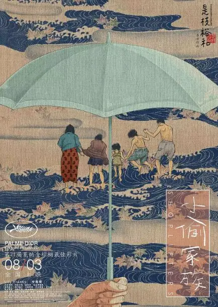
一个被别人用熨斗烫伤过胳膊的小女孩，看到另一个女人胳膊上有着相似的伤痕。
小女孩便用她稚嫩的小手轻轻抚摸着女人胳膊上的伤口，虽然小女孩还很小，很多事情都不懂，但她知道那很疼、很疼！
可爱的小手温暖着女人的心，女人将小女孩紧紧抱在怀里，告诉她：
妈妈说因为爱你才打你，那是骗人的，爱你的人会像这样，抱着你。
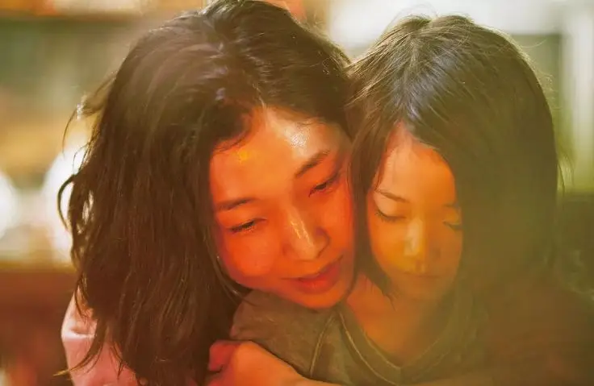
不需多言，甚至两个人此前都是陌生人，但她们最懂彼此。
这份羁绊充满了阴郁，但却炽热无比，甚至高过血缘。
因为这份羁绊，六个被抛弃的人组成了一个大家庭——《小偷家族》。
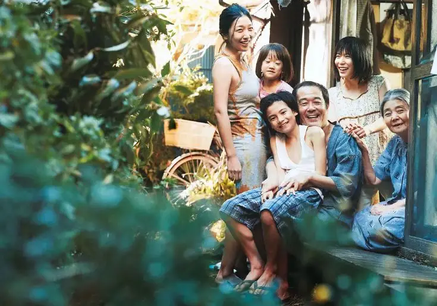
有小孩、有老人，有小偷也有妓女。
既可以拍成一群边缘人在冰冷都市建造“温暖小屋”的故事，也可以打造成韩国式生离死别、法理与人情的催泪故事。
或者可以加入更多幽默元素、动作设计，拍成带有悬疑色彩、充满个人英雄情怀的好莱坞家庭悲喜剧，甚至可以借着这些边缘人拍成反映社会问题的现实主义作品。
但这都不是「是枝裕和 」的作品，是枝裕和说：
我其实并不喜欢主人公克服弱点，守护家人，并拯救世界这样的情节。
我要描述没有英雄，只有凡人生活的、有点肮脏的世界忽然变得美好的瞬间。
所以，《小偷家族》像是枝裕和以往的作品一样，依旧不煽情、不鸡汤、不过度、不刻意甚至不求圆满，用琐碎的生活细节描写着一个个真实的人物。
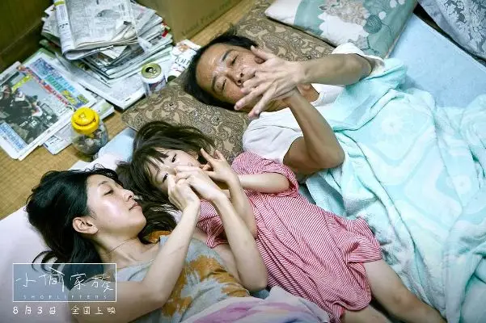
△ 信代、玲玲、大治
他们挤在逼仄的房间里艰辛地生活着，有人靠养老金过活，有人在工地上卖苦力，有人在洗衣店干着卑微而又辛苦的工作。
他们有缺陷、不完美，信代和大治总是惦记着柴田奶奶的退休金，柴田奶奶则很讨厌地把指甲剪的到处都是。
为了生活，他们还带着小孩一起小偷小摸。
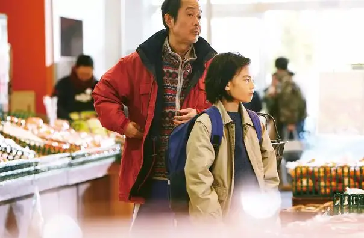
△ 大治与祥太
偷来的不仅有生活，还有“人”。
柴田奶奶被前夫抛弃，落寞街头，是信代把她捡了回来。
信代遭遇家暴、堕入风尘，是作为信代顾客的大治把她捡了回来。
而祥太和玲玲都是被家人“遗忘”后，被信代和大治捡回来的。
亚纪则是被父亲和后妈冷待而被柴田奶奶捡回来的。
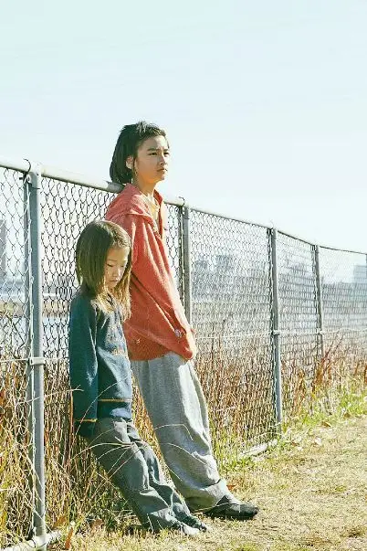
△ 玲玲与祥太
大家彼此同情，但又心怀芥蒂，大治渴望祥太叫自己一声爸爸，可祥太始终叫不出口。
这不是一个正常的家庭，但可能比正常的家庭更懂彼此。
真情流露只在不经意的眼神和动作中闪现，但都是短暂的一瞬。
更多时候都是大大咧咧地一边吃着泡面、可乐饼，一边闲聊。
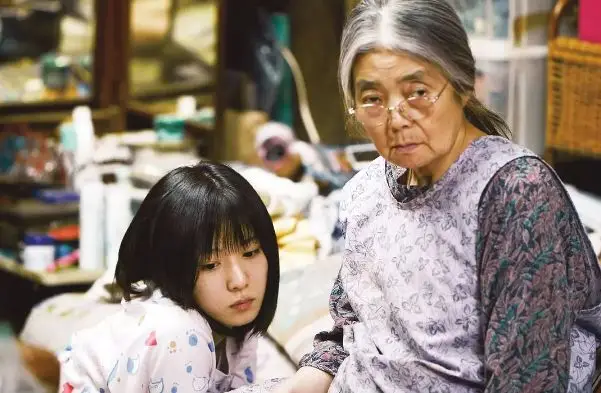
△ 亚纪和柴田奶奶
一群受伤的人靠在一起，他们的距离要比普通人更近。
电影中最感人是，一个夜晚，天空中燃起了烟花，一家人一起抬头望着天空，却因为离得太远看不到任何东西，但光是听着烟花燃放的声音就已经让大家幸福的大叫。
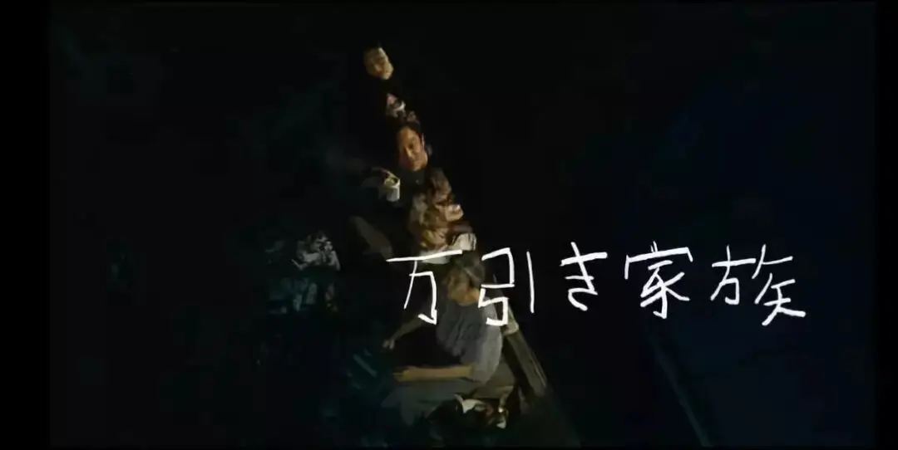
多么希望那一刻可以永存。
但是这样的家庭注定会被瓦解，因为他们没有未来！
柴田老奶奶已是垂暮之年，早已对未来没有任何指望，如今“儿孙满堂”更是对她最大的慰藉和祝福。
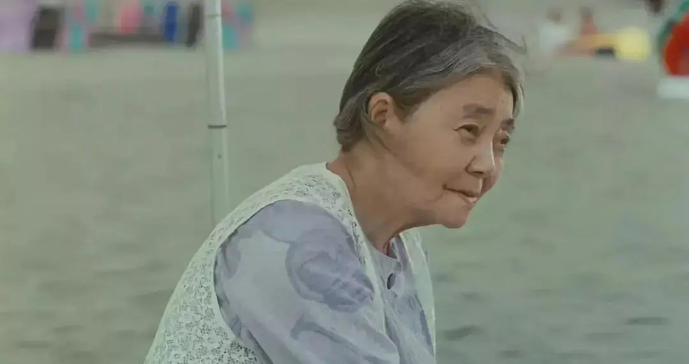
信代和大治的生活也基本定型，他们也早已不期望能有什么变化。
但是祥太和玲玲却不同，他们还是小孩，他们需要教育，他们不可能一辈子用“偷”来生活下去。
逐渐长大的祥太慢慢开始质疑眼前的生活，他问大治可以偷东西么，大治则告诉他，店里的商品没有主人，所以我们可以带走，只要商店没有关就还好。
没有办法像其他孩子去上学，大治则告诉祥太，“不能在家里学习的孩子，才需要去上学。”
虽然祥太还在懵懵懂懂中相信着大治的话，但是他的眼神中已经产生了质疑。
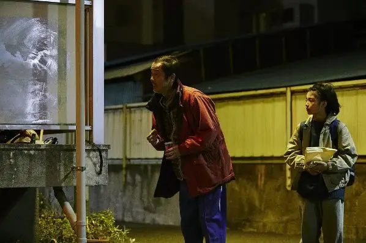
△ 偷东西归来的大治和祥太发现阳台上被妈妈家暴的玲玲
而真正改变祥太的是一个商品店的老爷爷。
当祥太带着妹妹偷东西的时候，老爷爷早已经发现，但是他没有立马指出，而是叫住祥太，告诉他不要再带着妹妹做那样的事，并且给了祥太两个棒棒冰。
只有恩典有这样的力量扭转人心，祥太从老爷爷的身上看到了恩典的力量，明明知道你在犯错，不仅饶恕了你，而且还给予更多。
这对于祥太的冲击要比批评、打骂强千倍。
后来，祥太偷东西的时候，便让玲玲站在远处，不允许她参与。
当发现玲玲还是跟上来偷东西的时候，他知道这样的状态不能再继续，于是他故意被抓。
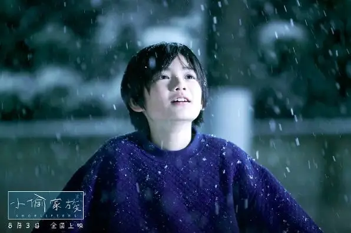
因为祥太被抓，整个家庭迅速瓦解。
当警察用“正常人”的逻辑看待这一家人的关系时，这一切充满了无奈和心碎。
他们告诉祥太，当你受伤躺在医院的时候，其他人打算连夜潜逃。
他们告诉玲玲，他们收留你不是出于好意，是诱拐。
他们告诉亚纪，柴田奶奶收留你不是因为爱你，而是为了每个月从你父亲那里拿一笔钱。
是真的么？
至少我们从三个孩子游离的眼睛中看到了受伤和怀疑。
如果这是真的，这些被人抛弃，被人捡回却又再次被抛弃的人是有多么的绝望！
的确，祥太和玲玲是大治偷东西的路上顺回来的，柴田奶奶也有定期从亚纪爸爸那里拿钱。
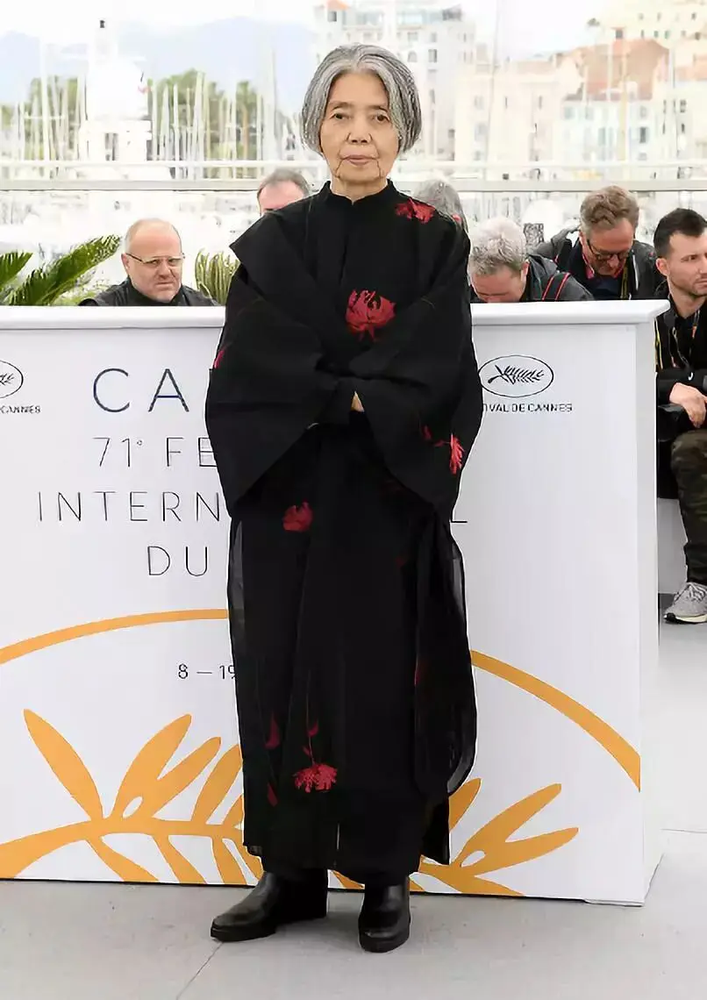
△ 树木希林饰演柴田奶奶，现实中她阅尽人生故事，曾一度遭受丈夫家暴，后因乳腺癌切除了右乳房，如今左眼失明，却活跃在各种电影中。
的确，警察描述的可能是事实，但不是全部的事实。
是某一刻的事实，但不是所有时间的事实。
柴田、大治和信代的卑劣里包藏着善良，自私中隐匿着爱心。
就像信代自己所说“这样一个天天被父母说后悔生下来的孩子怎么会对别人这么好呢？”
他们也从没觉得自己是个好人，但是看着另一个孩子被家暴、被丢弃，他们的心里就是难过。
当他们一时冲动带回来后，看到狭小的房间，想到以后有一顿没一顿的日子时，他们无数次想要把他们送回去。
但是当他们想到将这些可爱的孩子要重新送回到地狱时，他们咬着牙把孩子留在了自己的身旁，因为他们不想让祥太、玲玲变成下一个遍体鳞伤的自己。
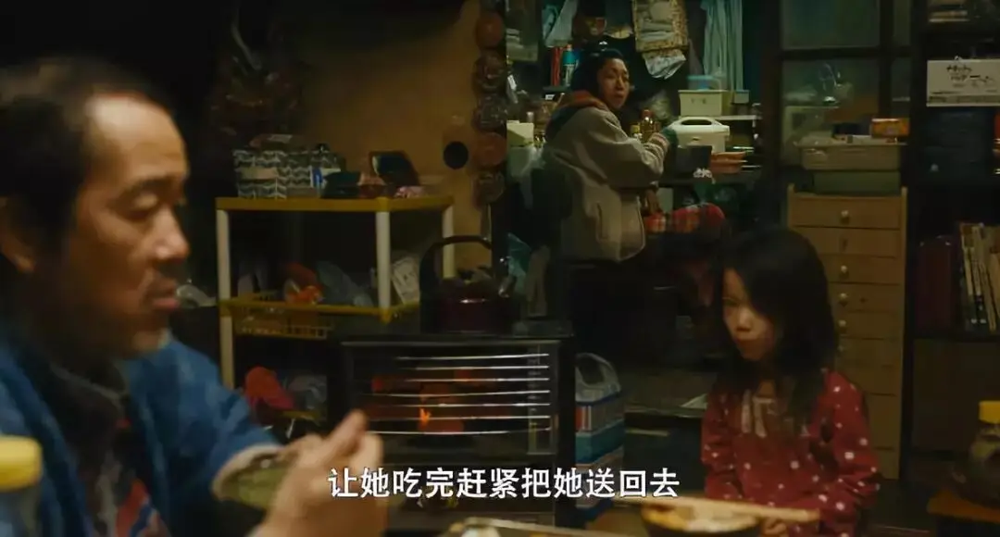
一个受伤的人也许更有能力爱别人。
这就是真实的人，也是是枝裕和在千疮百孔中捕捉到的美好瞬间。
当警察用咄咄逼人的语气质问信代，“因为自己没有孩子，便把别人的孩子抱来，是想要他们叫你妈妈，还是叫你母亲！”时。
安藤樱饰演的信代为本片贡献了最好的演技。
信代哽咽地着看警察，半天说不出话来，她欲言又止，最后苦笑地自言自语 “该叫我什么？”
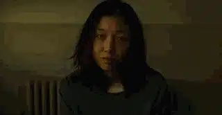
那种被人误解时心里的绞痛和无奈都写在信代的脸上。
而最后信代苦笑着没有给出答案，是因为信代爱着那些孩子，孩子叫她什么都不重要。
多希望孩子们此刻也能够出现在这里，这样就可以打消他们心中的疑虑，不必怀疑人生。
可是电影中所有的爱都躲在暗处，被爱的人只能体会些许，甚至根本没有丝毫察觉。
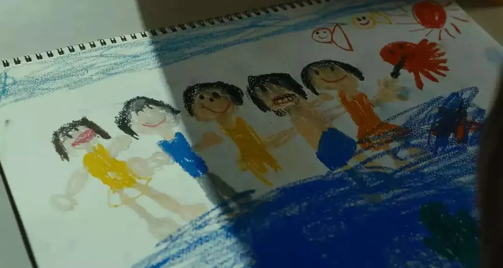
当柴田奶奶每次取款时故意大声将密码说给身边的亚纪时，她不知道奶奶的心思。
当柴田奶奶在沙滩上，用哑语对着海滩上的五个人说“谢谢你们"时，大家不知道。
当信代为了玲玲丢掉工作时，大家也不知道。
当大治觉得自己给不了祥太明天，撒谎告诉他那天的确打算抛弃祥太时，祥太不知道这是谎言。
当祥太在公交车上看着奔跑的大治用哑语说“爸爸”时，大治没能亲自见证这梦想中的时刻。
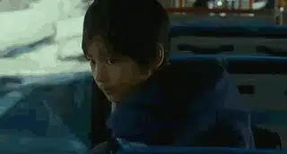
你永远在是枝裕和的电影中看不到泛滥的情感和不留遗憾的和解。
这种含蓄的情感，这种带有遗憾的爱，才最贴近生活中的真实。
这样的电影最难拍，过去小津安二郎做到了，如今是枝裕和也做到了！
△ 是枝裕和成为继衣笠贞之助、黑泽明、今村昌平之后，第四位拿下戛纳最佳影片的日本导演
《小偷家族》留给观众的思考很多，当我离开电影院走在回家的路上时，我不断思考，究竟什么才能构成一个“家”。
究竟是两个亲人心里的距离更近，还是两个受过同样伤害的朋友更近。
想到这几天同仇敌忾的ptp难友，我想应该是共同受伤的人会更容易联合、更容易走进彼此。
但是两个受伤的人走在一起，虽然可以共鸣，但是他们的出路在哪里。
想着想着，商品店里那个慈祥的老爷爷进入我的脑海。
也许，当有一天，我发现自己像祥太一样偷窃了上帝的荣耀而无地自容的时候，上帝不仅赦免了我，还给了我棒棒冰。
那个时刻我一定会被改变，恩典不仅能抚平我的伤口，能够让我有能力爱别人。
最重要的是，它会给我能够领受别人爱的能力。
那个时候，我会真正成为大家庭里的肢体，能够圣徒相通，能够和家人一起在上帝里面得享安息和面对明天。
现在，这只是一个知识，那一刻还没有来到，我期盼上帝改变我。
相关推荐：
击垮纳粹独裁的六份传单
这是一部绝不可辜负的经典
这是一部无神论永远都看不懂的获奖电影！
父母的眼泪和爱，我们能感受到的不到十分之一
这里没有挑逗你眼目情欲的小鲜肉
也没有挑动你肉体情欲的段子
更没有膨胀你今生骄傲的鸡血
我们只在乎那些最质朴真诚的作品
在那里我们才能恢复真正的想象力
我们也坚信这才是我们真正需要的

ID:Six_hundred_hits
长按二维码，一键关注
【六百击】
-END-
电影评论
尽情分享朋友圈

苹果打赏通道
小提示：文末广告是腾讯配送广告，内容与本号无关，但您的每次点击（无需反复点）都会给平台带来几毛收益，欢迎您点击支持六百击。